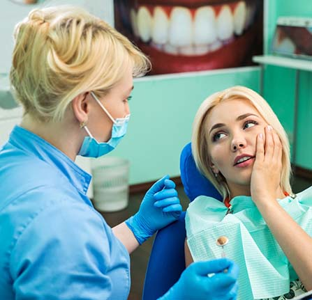
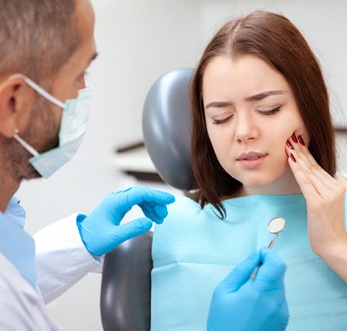
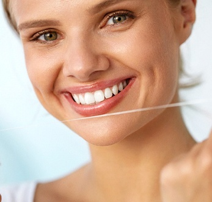
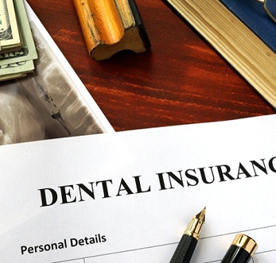
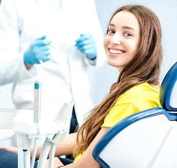
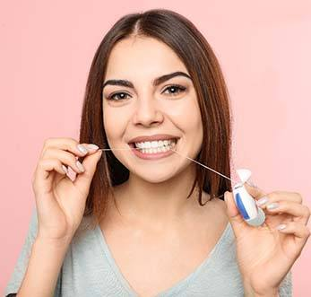
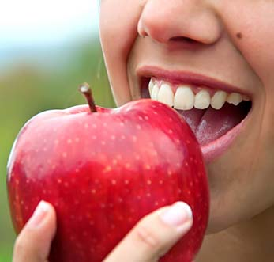
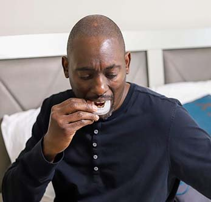
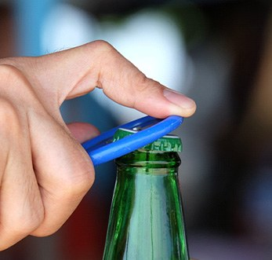

When a dental emergency strikes, it’s typically because of a long-term issue like tooth decay or gum disease or a physical injury that chipped/damaged a tooth in some way. Regardless of the type of emergency you’re experiencing, you should give our dental office a call. Putting it off will only make it worse, and we’re more than equipped to get you out of pain and save your smile with emergency dentistry in Grafton, WI.

Whether your tooth aches, you’ve experienced an oral injury, or you notice facial swelling after waking up in the morning, the first thing you should do is give our dental office a call. From there, here’s what you can expect:
Dental emergencies include a wide range of circumstances, so it’s not always easy to tell that you need to seek urgent dental care. In general, if you are experiencing a symptom or issue that can cause permanent damage to your teeth or is getting in the way of your daily activities, call us. Even if you are unsure whether you need urgent treatment, it’s better to give us a call than do nothing. We can help you determine how serious your situation is and schedule an appointment accordingly, while taking a “wait-and-see” approach could allow the problem to get worse. Below, you’ll find some of the most popular dental emergencies we treat.
Most dental emergencies are difficult to evaluate in terms of cost until you get to our dental office for closer examination. When you do, we’ll be able to confirm if your needed treatment is relatively simple or complex. For example, treating minor tooth decay is less expensive than a severe oral infection. No matter what your emergency care requires, we’ll work with you to build a treatment plan that fits your budget. To learn more about your expected costs, continue reading or give our dental office a call today!

Many variables impact the price of a dental emergency—the main being the required treatment. If you have a toothache, we will most likely need to provide root canal therapy to successfully remove the infected part of your tooth without extracting it. After, we will typically place a dental crown to protect and strengthen the affected tooth. Typically, this procedure can at least be partially covered by your dental insurance plan, but this will all depend on a case-by-case basis.
Other dental emergencies like chipped teeth, broken teeth, and lost teeth may also be partially covered. These are considered necessary restorations; however, insurance plans will vary. Usually, the sooner a dental emergency is treated, the easier it is to get you out of pain and back to smiling. Plus, there is less likelihood that you will need a more extensive restoration. Rest assured – our team will thoroughly explain the pricing information of your unique case beforehand so you know exactly what to expect.

Did you know that most dental emergencies are the result of untreated infection and damage? That means there are many steps you can take to prevent these unfortunate situations from occurring. For example, practicing good oral hygiene and visiting your dentist regularly are just two ways you can keep your smile free of harm.
Another way to save money over the years is by taking care of a problem as soon as you notice it. If you wait to seek treatment, your condition will only get worse, making the costs grow larger with time. Addressing a hurting tooth right away could mean the difference between root canal therapy and an extraction.

Fortunately, most dental insurance plans offer some form of coverage for emergency care. At least one yearly emergency exam is fully covered under some plans, while common services associated with hurting teeth (i.e., root canal therapy, extractions, dental crowns) are eligible for partial coverage. Of course, every policy is unique, which is why you should confirm the details of your coverage with your insurance provider before committing to anything. Our team is more than happy to help with that step if needed.
We understand that not everyone has dental insurance. Luckily, our front desk team is experienced in maximizing your insurance benefits while minimizing your out-of-pocket spending. We are happy to file claims for you, making your dental care easier overall. Additionally, we offer the following to help make your treatment affordable:
If you’re in the middle of a dental emergency, don’t hesitate to contact us for assistance. We’ll get you the prompt relief you deserve while keeping out-of-pocket expenses as low as possible.
Are you the kind of person who likes to be prepared? Want to avoid a dental emergency if at all possible? You’re not alone. Maintaining a healthy, beautiful smile that is free of chips and cracks isn’t always feasible, but it can be easier if you take the right steps. At Sweet Smiles Family Dentistry, we want to help you be proactive about your oral health, which is why we’ve compiled some helpful tips to ensure your teeth and gums stay injury-free. Should you have any questions, please don’t hesitate to contact our dental office.

There’s no way around it: you need to get a dental checkup and cleaning every six months to protect your smile from harm. In fact, these routine visits can help prevent everything from small infections to large cavities! Plus, the cleaning ensures that plaque and tartar are removed from your teeth so they aren’t vulnerable to damage. So, if it’s been more than six months since your last visit with our Milwaukee dental team, don’t wait another day to schedule your appointment.

If it sounds weird that brushing and flossing your teeth will keep them safe from injury, it’s true. Taking care of your smile is the first step to ensuring healthy teeth and gums. Using a fluoride toothpaste will not only protect against tooth decay, but it also strengthens tooth enamel. Also, brushing your teeth twice a day for two minutes as well as flossing at least once a day and rinsing will keep harmful bacteria out of your mouth and prevent cavities, gum disease, and tooth decay from developing.

Peanut brittle, apples, hard candies – all of these items sound and taste delicious to eat but can wreak havoc on your teeth if you’re not careful. Biting into hard, crunchy foods can cause your teeth to chip, crack, or even break. This is why it is better to cut these particular items up, if possible. Of course, how do you cut up a piece of peanut brittle? Well, you can’t, which is why it’s best if they are avoided altogether. Apart from the damage it can cause to your pearly whites, these items can also lead to tooth decay, gum disease, and cavities. Even apples? Yes, if consumed in large quantities. Fruits still have sugar in them, so while they are healthy to eat, it’s always best to think about consuming them in moderation.
Also, avoid chewing on inanimate objects like pens or pencils, or chomping on ice. These, too, can be damaging to your teeth and result in costly restorative dentistry services to fix the problem.

No matter if you are prone to bruxism (teeth grinding and clenching), or you enjoy playing various sports, wearing a mouthguard will be beneficial to protecting your teeth from damage. These custom-made devices are designed to protect smiles and prevent additional damage to your soft oral tissues. When dealing with bruxism, you will notice a change in the way your teeth, jaw, and gums feel when wearing your mouthguard because of the barrier the mouthguard will provide.
When playing sports, you will feel more confident should you experience a hard-hitting tackle on the field. These oral appliances are customized to fit your mouth and offer the greatest amount of protection against chips, cracks, breaks, or even a knocked-out tooth.

If you’ve ever used your teeth to open a bottle cap, trim your nails, or hold your keys, then you’ve used your teeth as tools. Don’t moving forward! Even if you didn’t experience any problems with habits like these in the past, all it takes is one time for your teeth to chip, crack, or fracture. Dental injuries like these aren’t just painful, they also warrant a same-day visit to our Milwaukee dental office for treatment.
Still feeling unsure about what you should do if a dental accident occurs? This is natural, as your first inclination is to panic. Fortunately, your emergency dentist at Sweet Smiles Family Dentistry has compiled some additional frequently asked questions to give you greater peace of mind and confidence should you experience an unfortunate incident at home. After reviewing the following information, please don’t hesitate to contact us with additional questions.
It’s not uncommon to assume that any type of emergency, no matter where it happens on the body, would be worthy of a trip to the ER. However, in most situations that pertain to the mouth, you’re better off seeing a dentist. Here’s why:
When choosing to go to the ER, you will likely face a long wait in the lobby and a doctor who is not trained in dental emergencies, specifically. While they may be able to address immediate symptoms, you need someone who can assist with long-term results.
Only in instances where you are experiencing continual bleeding, increased swelling, or a broken or fractured jaw should you get to an emergency room for immediate medical attention.
Yes! We know you need help when an emergency occurs, which is why we will happily treat you the same day your accident happens. Whether it is pain, swelling, or bleeding, we want to address the problem and get you back on your way to resuming normal activity as soon as possible. When an injury occurs, make sure to alert us as soon as possible. We will work you in at the earliest convenience.
In most situations, an over-the-counter pain reliever and ice pack/cold compress will be enough to make the pain you’re experiencing more bearable. Depending on what is causing the pain, it may only cause it to subside for a short time, but fortunately, this may be all the time you need before getting in to see us for emergency care. When arriving for your dental visit, make sure to reiterate what happened and where the pain is occurring. This will allow us to more easily identify the problem and offer a valuable solution as quickly as possible.
The good news is that most insurance companies understand that accidents can happen and agree to cover a portion of the emergency services you receive. If it is only minor, it may be covered at 70-80%, whereas a major treatment or procedure might be covered at 50%. It’s always important to review your policy and check with your insurance provider to determine how much you will expect to pay out of pocket for treatment. Our dental office will be happy to assist in working on your behalf with your insurance company to ensure you get the care you need at the most affordable price.
Unfortunately, chipped teeth don’t heal on their own because enamel, the outer layer of your tooth, doesn’t regenerate. This is why even small chips need professional attention to prevent further damage or sensitivity. Treatment depends on the severity and location of the chip.
At Sweet Smiles Family Dentistry, we may recommend:
If you’ve chipped a tooth, contact us as soon as possible. Having your tooth evaluated quickly helps protect your smile from bigger issues.
Tooth pain can certainly make it hard to sleep, but there are a few strategies you can use that may help you rest easier, such as:
If the pain keeps you up at night, especially if it persists, it’s time to call our office. We can help identify and treat the cause quickly, so you can get the restful sleep you need to tackle each day.
Household adhesives like superglue should never be used to repair broken dentures. Firstly, these products contain toxic chemicals that aren’t safe for oral use. Secondly, it can damage the denture material, making professional repairs more difficult—or even impossible.
Instead of relying on quick DIY fixes if your dentures break, take the following steps:
Once we see you in the office, we can check your dentures and see if the damage is within our ability to repair. If not, we’ll give you a set of temporary prosthetics until a replacement appliance can be delivered.
Family Dentistry Restorative Dentistry Dental Implants Cosmetic Dentistry Orthodontics Periodontal Therapy Wisdom Teeth Extractions View Our Services
9:00am – 6:00pm
9:00am – 6:00pm
9:00am – 6:00pm
9:00am – 6:00pm
8:00am – 2:00pm